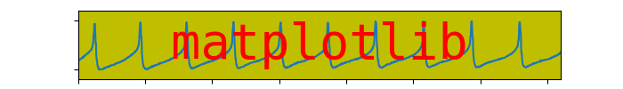

This file generates an old version of the Matplotlib logo.
Out:
loading /home/tcaswell/.virtualenvs/bleeding/lib/python3.7/site-packages/matplotlib/mpl-data/sample_data/membrane.dat
from __future__ import print_function
# Above import not necessary for Python 3 onwards. Recommend taking this
# out in examples in the future, since we should all move to Python 3.
import matplotlib.pyplot as plt
import numpy as np
import matplotlib.cbook as cbook
# convert data to mV
datafile = cbook.get_sample_data('membrane.dat', asfileobj=False)
print('loading', datafile)
x = 1000 * 0.1 * np.fromstring(open(datafile, 'rb').read(), np.float32)
# 0.0005 is the sample interval
t = 0.0005 * np.arange(len(x))
plt.figure(1, figsize=(7, 1), dpi=100)
ax = plt.subplot(111, facecolor='y')
plt.plot(t, x)
plt.text(0.5, 0.5, 'matplotlib', color='r',
fontsize=40, fontname=['Courier', 'DejaVu Sans Mono'],
horizontalalignment='center',
verticalalignment='center',
transform=ax.transAxes,
)
plt.axis([1, 1.72, -60, 10])
plt.gca().set_xticklabels([])
plt.gca().set_yticklabels([])
plt.show()
Total running time of the script: ( 0 minutes 0.023 seconds)